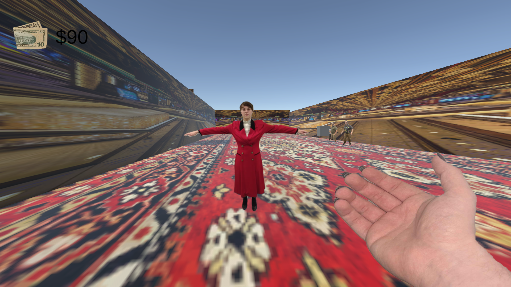
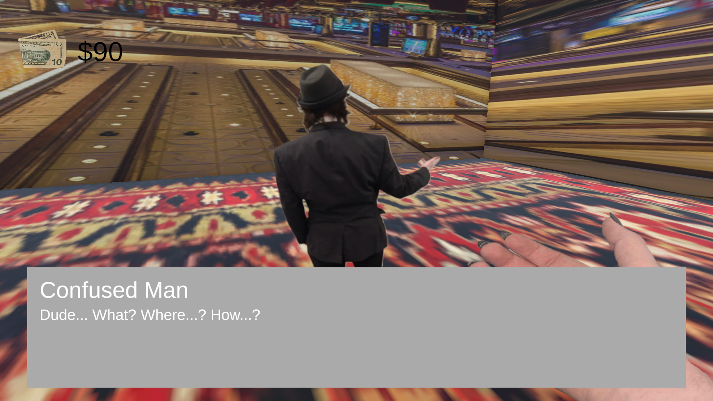

Project Description
This extremely long-titled game is my product for the second ever Roll Your Fate game jam, an RIT professor-hosted event in which individual teams are given individual jam themes according to dicerolls. My team got the notable challenges of "every possible input" for our control scheme, and "real photos" for our artstyle. This game is a unique sort of gambling in that it is based on both luck and skill, requiring you to pass a number of quick time events requiring keys all across the keyboard before a diceroll simulator. This benefits me, working on the character writing as I was, as it encouraged multiple different attempts at each NPC. (and thus, a way to see the multiple dialogue options!) Working on this project was a good way to reinforce my existing skills with the Unity engine, experiment with animation and audio, and write dialogue and characters.
My Roles
Art and Sound
- Created spritesheets and animations for all NPC characters based off of real photographs
- Created sound effects and a system for playing them during dialogue
- Did all of the level design and layout of the NPCs themselves
- Named and wrote for most of the existing NPCs in game.
Programming
- Created one half of the NPC interaction system, the singleton dialogue box, for use with the NPC's individual dialogue systems
- Programmed the logic for the highmatch dice game
- Supportive and refactory programming for the interaction system and dicerolling implementation
